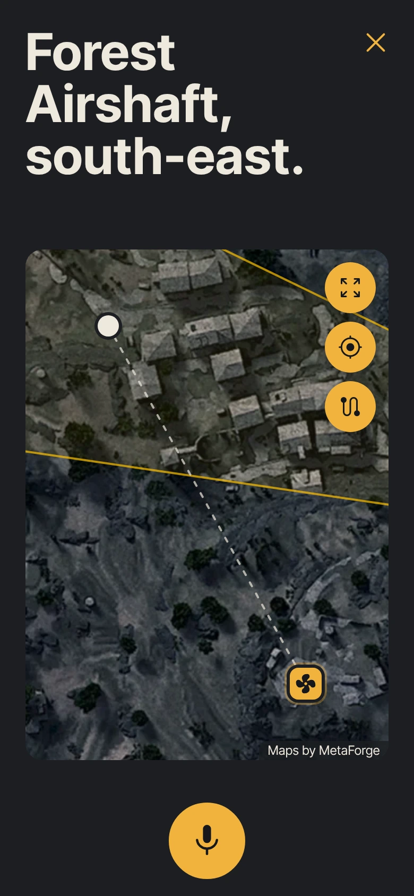
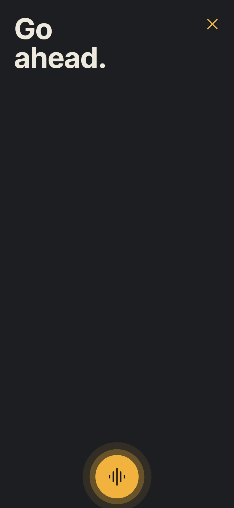
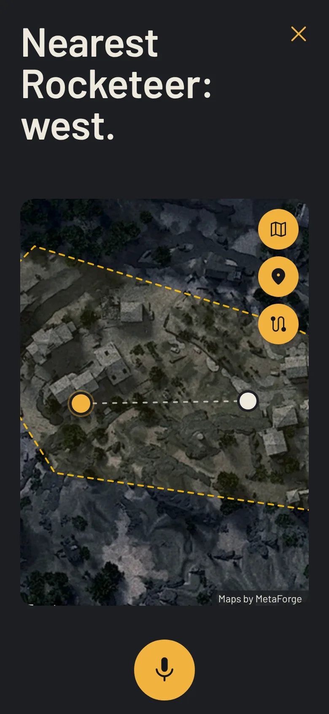
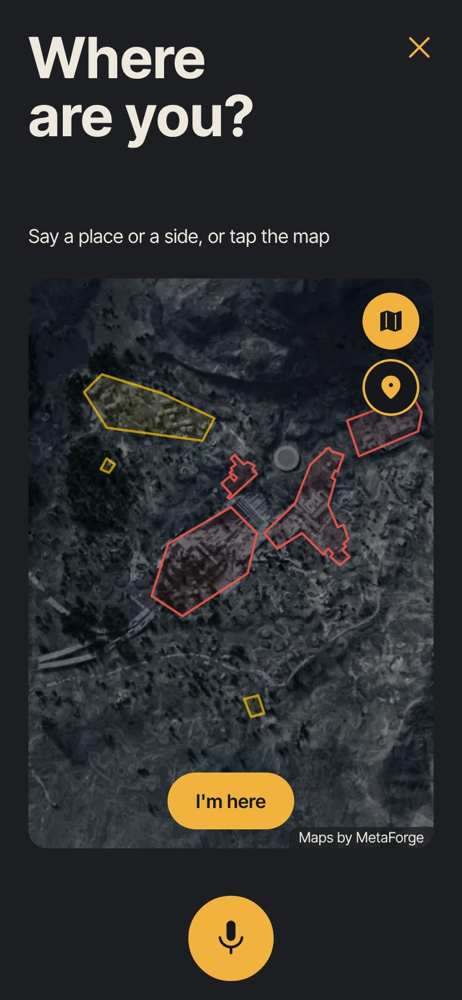

Hey Relay
A voice companion for ARC Raiders. Ask where to go, hear the answer, keep playing.

Need a quick evac?
Say where you are, and Relay names the nearest way out and shows the route on the map. Short on time? Tell it how many minutes are left and it gets straight to the point.

Just ask.
Say “Hey Relay” or tap, and talk like you would to a teammate. Relay answers out loud, then listens for a follow-up, so your eyes stay on the TV and your hands stay on the pad.

Find what you need.
Ask for an item, an enemy or a spawn. One dot on the map shows the nearest, so you can drop your waypoint in-game without scrolling a guide full of adverts. Hunting for Dead Flowers? It names the best places to look, and tells you straight when something has no fixed spot.

Show it where you are.
Can't remember the name of the place? Tap your spot on the map and confirm. Relay works out the nearest way out, or your next step, from right where you're standing.
How it works